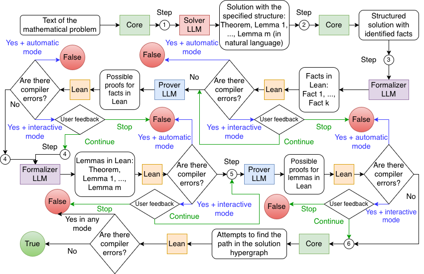

Autoformalizes LLM-generated solutions lemma-by-lemma into Lean 4, proves them with a prover LLM, and links lemmas via solve_by_elim to verify reasoning.
Abstract
With the growing popularity of Large Reasoning Models and their results in solving mathematical problems, it becomes crucial to measure their capabilities. We introduce a pipeline for both automatic and interactive verification as a more accurate alternative to only checking the answer which is currently the most popular approach for benchmarks. The pipeline can also be used as a generator of correct solutions both in formal and informal languages. 3 AI agents, which can be chosen for the benchmark accordingly, are included in the structure. The key idea is the use of prompts to obtain the solution in the specific form which allows for easier verification using proof assistants and possible use of small models ($\le 8B$). Experiments on several datasets suggest low probability of False Positives. The open-source implementation with instructions on setting up a server is available at https://github.com/LogicEnj/lean4_verification_pipeline.
Problem
Benchmarks for LLM mathematical reasoning usually check only the final answer, which rewards guessing and ignores whether the reasoning is correct and well-explained. A way to formally guarantee the correctness of an informal LLM solution is needed.
Approach
A pipeline of three LLM agents (Solver, Translator, Prover) is used. The Solver is prompted to write its solution as a chain of propositional lemmas, each with premises and a single conclusion. The Translator autoformalizes each lemma into Lean 4 and the Prover completes the proofs. The lemmas are then linked with solve_by_elim. Automatic and interactive (user-feedback) modes are supported, and the pipeline outputs a report with the compiling Lean code or the errors that stopped it.

Figure 1: Scheme of the algorithm
Results
On 200 solutions built from MATH-500 easy problems, Qwen as a judge produced 85 false positives. The pipeline rejected all incorrect solutions and accepted 43 of 50 correct ones automatically, and all 50 with user feedback. False positives were observed only on very easy problems that Lean can prove without the intended lemma structure.